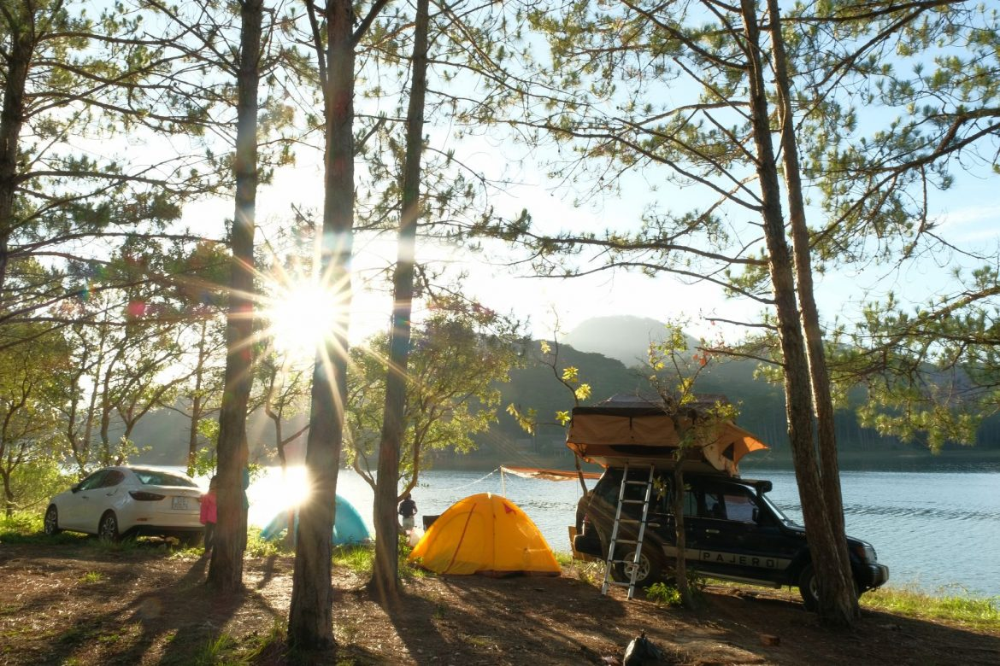

Bài viết mới nhất
-
Top 30 khách sạn Phú Quốc dưới 1 triệu
Top 30 khách sạn Phú Quốc dưới 1 triệu Thiên đường biển đảo Phú Quốc luôn chào đón du khách tứ phương đến để thưởng thức vẻ đẹp …
-
Khám phá top 30 homestay ở Phú Quốc
Thiên đường biển đảo Phú Quốc luôn là điểm đến lý tưởng cho những giây phút nghỉ ngơi. Bên …
-
Tạo blog cá nhân là có thể kiếm được tiền?
Tạo blog cá nhân sau đó viết bài là có thể kiếm được nhiều tiền? Dạo gần đây ai …
Travel Blogger
-
Tạo blog cá nhân là có thể kiếm được tiền?
Tạo blog cá nhân sau đó viết bài là có thể kiếm được nhiều tiền? Dạo gần đây ai …
-
Làm travel blogger thế nào? ban đầu nên viết ở đâu?
Làm travel blogger thời điểm hiện tại có rất nhiều nền tảng để chia sẻ, facebook, group của fanpage, …
-
Trọn bộ video tạo blog cá nhân
Tạo blog cá nhân bằng wordpress là 1 bước quan trọng trong con đường làm travel blogger. Với chuổi …
-
Tạo blog cá nhân cho travel blogger hướng dẫn từ a-z
Tạo blog cá nhân bây giờ không hề khó 1 xíu nào, bạn không cần phải giỏi code hoặc …
-
 Travel blogger và những câu hỏi thường gặp
Travel blogger và những câu hỏi thường gặp
Tạo blog cá nhân bằng wordpress là 1 bước quan trọng trong con đường làm travel blogger. Với chuổi …
-
50+ Travel Blogger nổi tiếng thế giới
Danh sách 50 travel blogger toàn cầu sẽ truyền cảm hứng cho công việc và đam mê của bạn. …
Top list
-
Top 30 khách sạn Phú Quốc dưới 1 triệu
Thiên đường biển đảo Phú Quốc luôn chào đón du khách tứ phương đến để thưởng thức vẻ đẹp của biển cả, nắng gió của đất trời và sự hoang …
-
Khám phá top 30 homestay ở Phú Quốc
Thiên đường biển đảo Phú Quốc luôn là điểm đến lý tưởng cho những giây phút nghỉ ngơi. Bên cạnh những điểm du lịch tuyệt vời, thiên nhiên hữu tình …
-
 Top 10 bãi biển đẹp nhất phú quốc
Top 10 bãi biển đẹp nhất phú quốc
Phú Quốc được ví như một thiên đường biển đảo đẹp nhất Việt Nam. Ngoài việc sở hữu vẻ đẹp của thiên nhiên, không khí của đất trời, Phú Quốc …
-
7 câu hỏi thường được hỏi khi là solo female traveler
Du lịch một mình, nghe thì thấy tự do thoải mái thật, nhưng nó không dành cho tất cả mọi người. Là con gái – đi du lịch bụi một
-
Top 10 resort 5 sao ở Phú Quốc
Phú Quốc luôn là một trong những điểm đến nghỉ dưỡng được ưa chuộng hàng đầu mỗi năm. Được ví như thiên đường biển đảo Việt Nam, Phú Quốc vươn …
-

Top 10 điểm cắm trại ở Đà Lạt
Nói đến du lịch thì không thể bỏ qua một hoạt động thú vị là cắm trại. Hoạt động cho phép bạn hòa mình với thiên nhiên, tận hưởng khí …